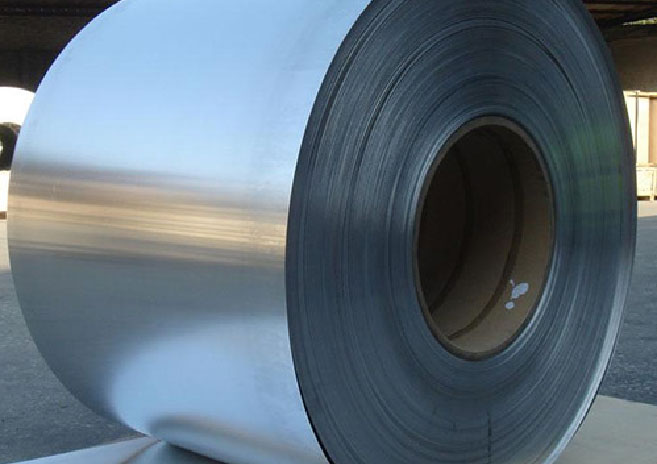
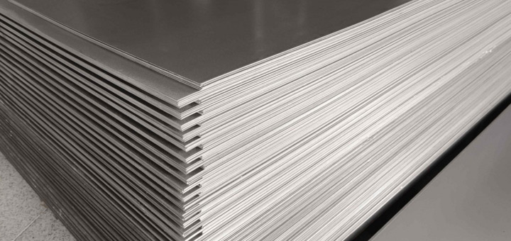
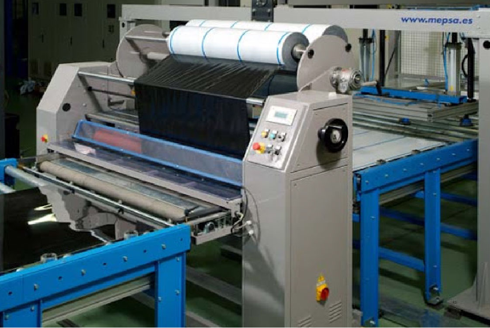
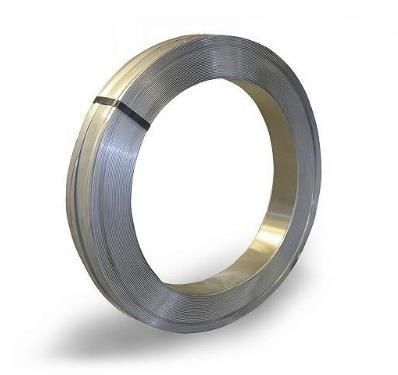

SERVICORTE
División de servicorte
Corte en "Blanks" con o sin colocación de polietileno
Corte y planchado de bobinas y colocación de polietileno
Esmerilado de chapas con protección de polietileno
Flejado
Corte en "Blanks" con o sin colocación de polietileno
En la actualidad contamos con una máquina italiana de última generación, la cual nos permite ofrecerles a nuestros clientes el material que necesitan, a la medida que más favorezca a la fabricación de su producto. Esta máquina realiza cuatro procesos en un solo paso:
- Planchado.
- Aplicación de polietileno.
- Corte longitudinal.
- Corte transversal.
De esta forma se evita el manipuleo excesivo del material, teniendo en cuenta que el acero inoxidable es delicado y comúnmente se utiliza manteniendo la terminación original.
Características técnicas
- Encoder digital de 1.000 pulsos, que permite realizar cortes transversales precisos, ej: 333,5 mm.
- Posicionador digital de cuchillas, slitter de corte longitudinal, que permite realizar 5 cortes longitudinales sobre el ancho de la bobina a utilizar.
- Procesar espesores desde 0,40 mm a 1,6 mm.
- Cuenta con ampliador automático de blanks que evita que las piezas se encimen, y de esta manera no se producen daños en las mismas.
- Cuenta con un generador de corriente electrostática que adhiere el papel momentáneamente a la chapa, para lograr un mejor ampliado, sobre todo en piezas pequeñas.
Ventajas
- Salir de las medidas standards.
- Reducir el desperdicio.
- Eliminar el corte en fábrica.
- Acortar los tiempos de producción.
- Evitar daños en el proceso, mediante la aplicación de polietileno.
Corte y planchado de bobinas y colocación de polietileno
Entre otras ventajas, Servicorte le ofrece a sus clientes, el planchado y corte de bobinas, con papel, sin papel o con polietileno, de acuerdo a sus necesidades, utilizando una nueva línea italiana de última tecnología, que le permitirá contar con chapas a la medida que usted necesite.
Características
- Desbobinador con capacidad para 12 Tons.
- Guías autocentrantes para evitar falsas escuadras.
- Cabezal planchador.
- Enrrollador automático de papel.
- Enrrollador de refiles.
- Apilador automático de chapas.
- Generador de corriente electrostática para adherir el papel.
Especificaciones
- Espesores de corte: 0,4 mm / 1,8 mm.
- Ancho de bobinas: 50 / 1.500 mm.
- Largo de las chapas cortadas: 5 / 6.000 mm.
Esmerilado de chapas con protección de polietileno
Terminaciones: en grano 180, 240, 320 y 600.
Espesores: 0,5 / 5,00 mm (laminado en frío).
Medidas de las chapas:
- Mínima: 600 x 1.000 mm.
- Máxima: 1.500 x 5.000 mm.
Esmerilado de una cara o de ambas caras.
Protección de polietileno.
Flejado
Características para el flejado de bobinas:
Espesores: 0,20/3.00 mm.
Anchos: hasta 1.500 mm para la bobina original.
Cortes: a partir de 10 mm.
Los trabajos realizados con equipos versátiles y desarrollados con el objetivo de que el fleje cortado resulte como la bobina original, controlados por equipos electrónicos que regulan de acuerdo a las características del flejado las velocidades, tensión de enrollado, evitando asimismo rebabas en el material.
Se realizan también, manteniendo el ancho original de la bobina, fraccionado en peso y vinilizados, embalando siempre el material resultante según las necesidades del cliente.
